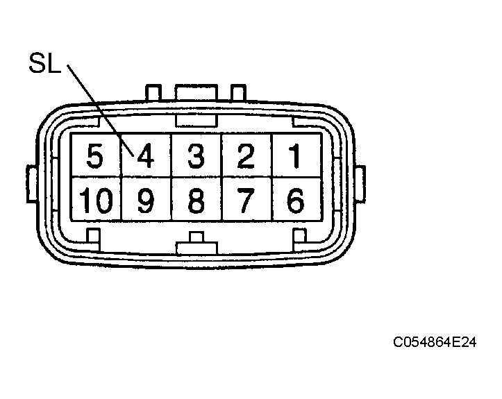
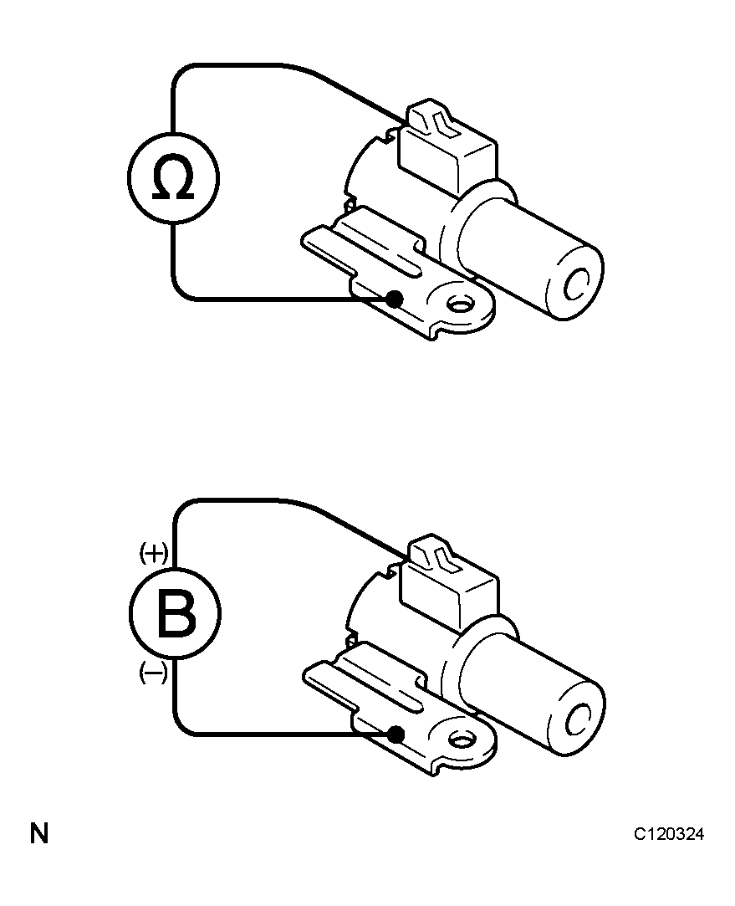

Inspection Procedure
WARNING: This page is about a different variant/trim than selected.
- INSPECT TRANSMISSION WIRE (SHIFT SOLENOID VALVE SL)
- Disconnect the E1 wire connector.
- Measure the resistance of the transmission wire.
Standard resistance
TESTER CONNECTION SPECIFIED CONDITIONTester Connection Condition Specified Condition 4 (SL) - Body ground 20°C (68°F) 11 to 15 Ω
NG: Go to step 3

Courtesy of © TOYOTA, LICENSE AGREEMENT TMS1002OK: Go to Next Step
- CHECK WIRE HARNESS (TRANSMISSION WIRE - ECM)
- Disconnect the E6 ECM connector.
- Measure the resistance of the wire harness side connector.
Standard resistance
TESTER CONNECTION SPECIFIED CONDITIONTester Connection Condition Specified Condition E6-11 (SL) - Body ground 20°C (68°F) 11 to 15 Ω
NG: REPAIR OR REPLACE HARNESS AND CONNECTOR
OK: REPLACE ECM
- INSPECT SHIFT SOLENOID VALVE SL
- Remove the shift solenoid valve SL.
- Measure the resistance between the solenoid valve terminal and solenoid valve body.
Standard resistance: 11 to 15 Ω at 20°C (68°F)
- Connect the battery's positive (+) lead to the terminal of the solenoid connector, and the negative (-) lead to the solenoid body.
- Check the operating noise of the solenoid valve.
OK: Solenoid makes operating noise.
NG: REPLACE SHIFT SOLENOID VALVE SL

Courtesy of © TOYOTA, LICENSE AGREEMENT TMS1002OK: REPAIR OR REPLACE TRANSMISSION WIRE